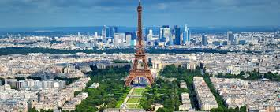
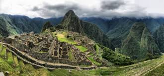
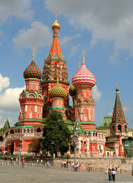
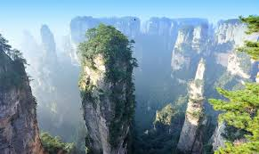
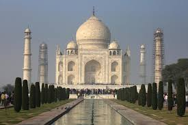
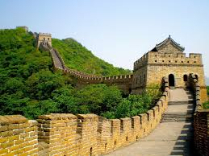

Machu Picchu es una ciudad inca rodeada de templos, andenes y canales de agua, construida en lo más alto de una montaña. Su construcción fue edificada con grandes bloques de piedra unidas entre sí, sin el uso de amalgama. Actualmente es considerada patrimonio cultural de la humanidad al ser reconocida como importante centro político, religioso y administrativo de la época incaica.
Machu Picchu que en castellano significa “montaña vieja”, es la ciudadela inca más famosa del mundo. Ubicada a 110 kilómetros al noreste de Cusco, en la provincia de Urubamba, esta joya arquitectónica está rodeada de templos, andenes y canales de agua.
Situada en el extremo del Campo de Marte a la orilla del río Sena, este monumento parisino, símbolo de Francia y de su capital, es la estructura más alta de la ciudad y el monumento que cobra entrada más visitado del mundo, con 7,1 millones de turistas cada año.5 Con una altura de 300 metros, prolongada más tarde con una antena hasta los 324 metros, la torre Eiffel fue la estructura más elevada del mundo durante 41 años.
Fue construida en dos años, dos meses y cinco días, y en su momento generó cierta controversia entre los artistas de la época, que la veían como un monstruo de hierro.7 Tras finalizar su función como parte de las Exposiciones Universales de 1889 y 1900, fue utilizada en pruebas del ejército francés con antenas de comunicación,8 y hoy en día sirve, además de atractivo turístico, como emisora de programas radiofónicos y televisivos
El coloso de Rodas era una gran estatua del dios griego Helios, realizada por el escultor Cares de Lindos en la isla de Rodas (Grecia) en 292 a. C. y destruida por un terremoto en 226 a. C. Es considerada una de las Siete maravillas del mundo antiguo.
Todo lo que se conoce sobre esta estatua se debe a las noticias que dejaron los escritores antiguos Plinio el Viejo, Polibio2 y Estrabón, y a las crónicas bizantinas de Constantino VII Porfirogéneta, Miguel el Sirio y Filón
La Gran Muralla China es una antigua fortificación china construida y reconstruida entre el siglo V a. C. y el siglo XVI (Edad Moderna) para proteger la frontera norte del Imperio chino durante las sucesivas dinastías imperiales de los ataques de los nómadas xiongnu de Mongolia y Manchuria.
Contando sus ramificaciones y construcciones secundarias, se calcula que tiene sobre unos 7000 kilómetros de largo,1 desde la frontera con Corea, al borde del río Yalu, hasta el desierto de Gobi, a lo largo de un arco que delinea aproximadamente el borde sur de Mongolia Interior, aunque hoy solo se conserva un 30 % de ella.2En promedio, mide de 6 a 7 metros de alto y de 4 a 5 metros de ancho.

En 2007 una plataforma impulsada en internet estableció por votación popular las Siete Maravillas de nuestro mundo globalizado. Pero ¿cuáles fueron LAS SIETE MARAVILLAS DEL MUNDO ANTIGUO? ¿Qué aspecto tenían? ¿Qué cualidades les conferían tal estimación? El presente libro de KAI BRODERSEN responde de forma detallada a estas preguntas en el caso de las más recurrentes entre ellas, a saber: las Pirámides de Egipto, las Murallas y los Jardines Colgantes de Babilonia, la estatua de Zeus en Olimpia, el templo de Ártemis en Éfeso, el Mausoleo de Halicarnaso y el Coloso de Helios en Rodas. Sin embargo, esta amenísima obra no se detiene sólo aquí, sino que también nos informa de las otras muchas creaciones que en un momento u otro fueron incluidas dentro de estas Maravillas, así como del apasionante recorrido histórico que unas y otras conocieron desde los autores más antiguos hasta el Renacimiento.